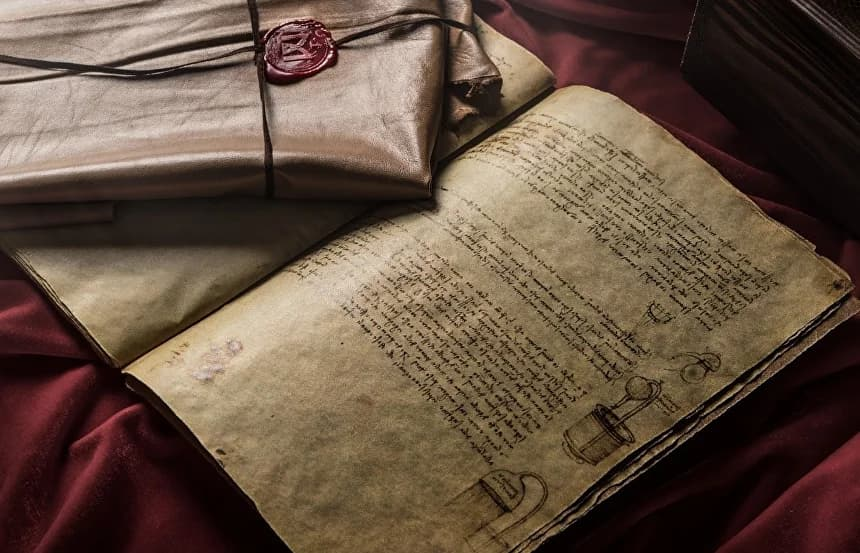
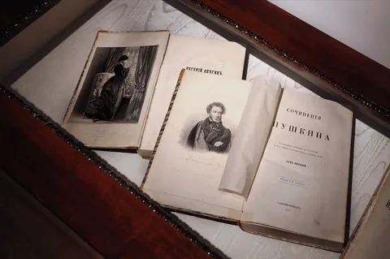
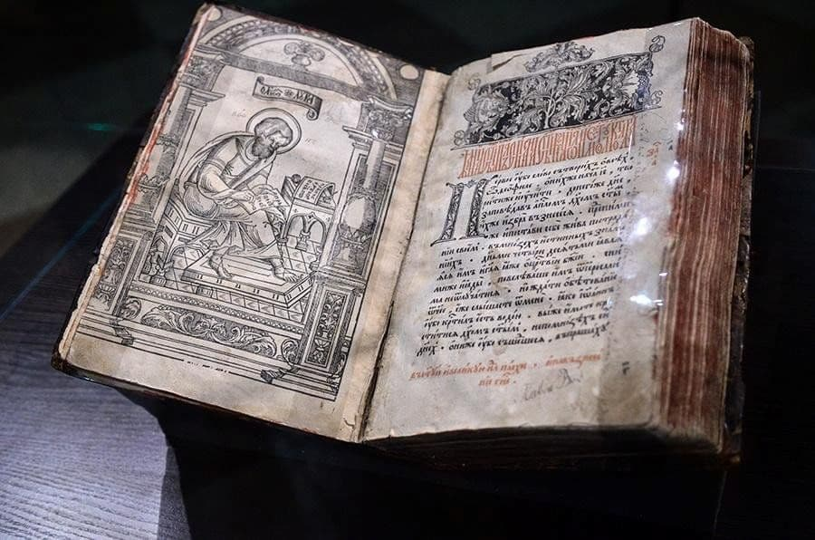
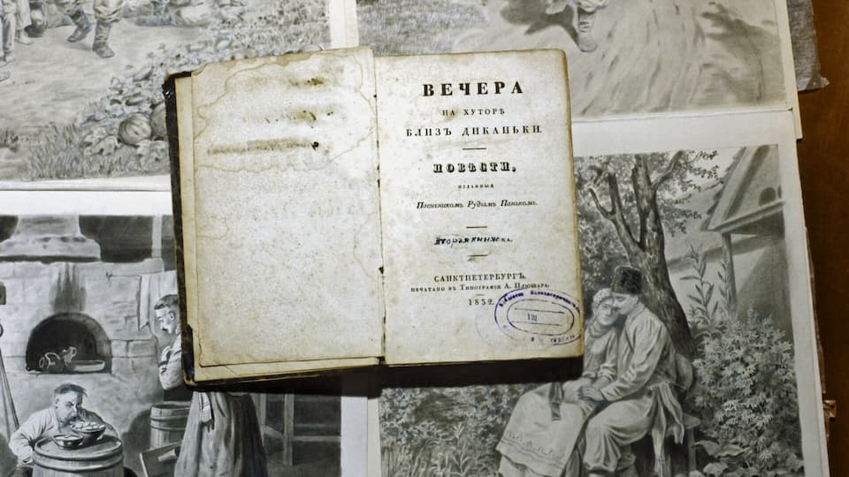
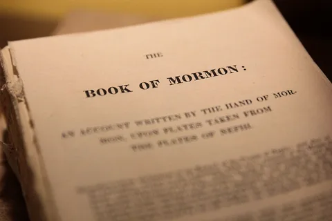
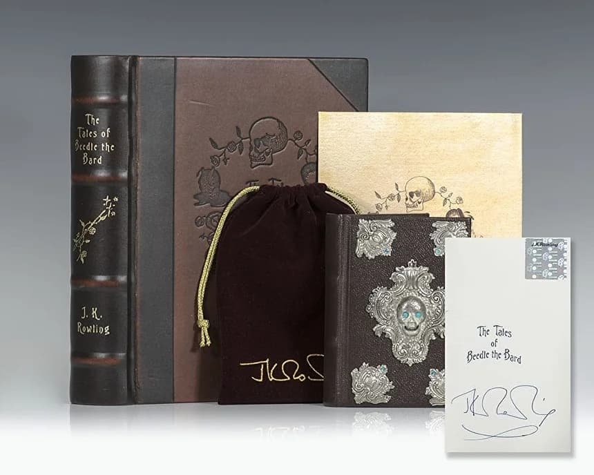
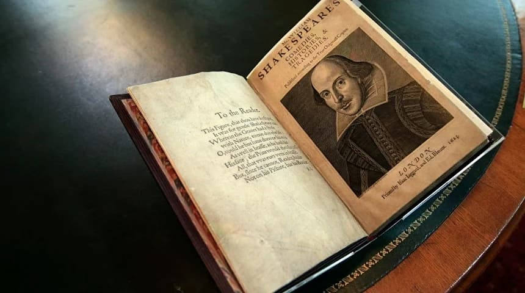
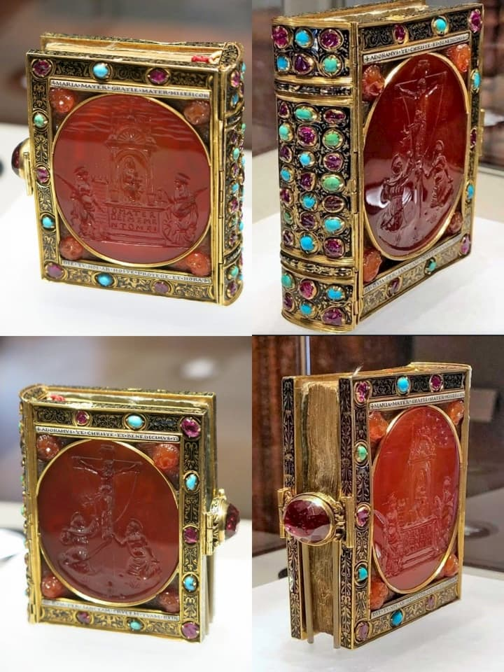

Лестерский кодекс — это уникальная тетрадь научных записей, созданная великим Леонардо да Винчи в период между 1504 и 1510 годами. Предположительно работа над рукописью велась как в Милане, так и во Флоренции. Являясь одной из 30 научных работ мастера, эта рукопись признана наиболее значимой среди всех его научных трудов.
Научный труд представляет собой собрание наблюдений, гипотез и исследований в различных областях знаний. Особое внимание в рукописи уделено:
Зеркальный почерк — главная особенность кодекса. Леонардо писал справа налево, используя зеркальное письмо, которое можно прочесть только с помощью зеркала. Существует несколько теорий, объясняющих этот феномен:
Путь книги был долгим и запутанным. После смерти да Винчи рукопись перешла к его ученику Мельци, а затем сменила нескольких владельцев. В 1717 году кодекс приобрёл граф Лестер, от которого и получил своё название.
Рекордная продажа состоялась в 1994 году, когда основатель Microsoft Билл Гейтс приобрёл рукопись на аукционе за 24 миллиона долларов, что сделало её самой дорогой книгой в мире.
Общественный доступ к рукописи обеспечивается благодаря усилиям нынешнего владельца. Кодекс регулярно экспонируется в различных музеях мира, а цифровая версия доступна онлайн для исследователей и любителей искусства.
Инновационные идеи, содержащиеся в кодексе, опередили своё время на столетия. Многие из наблюдений и гипотез да Винчи были подтверждены современной наукой, что подчёркивает гениальность этого универсального учёного и изобретателя.
Российские рекорды
Прижизненный «Евгений Онегин» стал самой дорогой книгой 2023 года в России. Анонимный коллекционер заплатил за первое издание романа в стихах (1826-1832 гг.) 26 миллионов рублей. Книга представлена в роскошном марокеновом переплете с золотым тиснением.

На втором месте оказался Львовский «Апостол» 1574 года издания от первопечатника Ивана Федорова, ушедший с молотка за 16 миллионов рублей. Это уникальный экземпляр с сохранившимися выходными данными.

Третью позицию заняли прижизненные «Вечера на хуторе близ Диканьки» Гоголя, проданные за 11 миллионов рублей. Издание 1831-1832 годов считается большой библиографической редкостью.

Книга Мормона в печатной рукописи была продана за 35 миллионов долларов Церкви Иисуса Христа Святых последних дней. Это вторая версия оригинальной рукописи, созданная Джозефом Смитом.

Сказки барда Бидля от Джоан Роулинг стали самой дорогой книгой XXI века. Рукописный экземпляр с авторскими иллюстрациями был продан Amazon за 3,98 миллиона долларов. Все средства пошли на благотворительность.

Первое фолио Шекспира , содержащее большинство пьес драматурга, было продано за 6,16 миллиона долларов Полу Аллену, сооснователю Microsoft.

Драгоценная книга часов 1500-х годов является одним из немногих сохранившихся сокровищ королевской семьи Валуа с необыкновенной историей. Король Франции Франсуа I, который построил Шамбор и пригласил Леонардо да Винчи ко двору, приобрел его в 1538 году и подарил своей племяннице, позднее королеве Наварры. Позже он перешел к ее сыну Анрию IV, монарху, прекратившему религиозные войны во Франции, а затем к кардиналу Мазарини, могущественному священнику Людовика XIII и Людовику К концу 1600-х годов он достиг Англии и вошел в частные коллекции, оставаясь в британских и позднее американских руках на века. В период с 2017 по 2020 год международная кампания Tous Mécens! , собрал 8,25 млн евро, чтобы Лувр мог вернуть его во Францию. Сегодня он представлен в Париже - редкое выживание, которое нам невероятно повезло, что до сих пор сохраняется.

Стоимость современных дорогих книг определяется несколькими факторами:
Примечательно, что даже в эпоху цифровых технологий бумажные книги сохраняют свою ценность как произведения искусства и исторические артефакты. Коллекционеры готовы платить миллионы за возможность обладать уникальными экземплярами, которые становятся частью культурного наследия человечества.